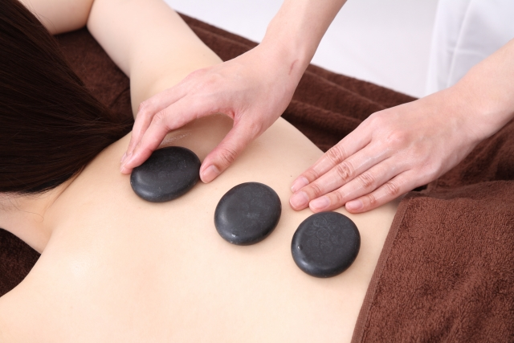

心と体癒しの空間
日常の喧騒から離れ、自分だけの時間を。
上質な空間で、深いリラクゼーションをお届けします。
防府市新田の完全個室リラクゼーションサロン。

「癒都里（ゆとり）」は、完全予約制、完全個室のプライベートマッサージサロンです。 和の趣とモダンな上質さを融合した空間で、 熟練のセラピストがお一人おひとりのお身体の状態に合わせた オーダーメイドの施術をご提供いたします。
香り、音楽、照明——すべてにこだわり、 五感を通じて心身のバランスを整える 特別な体験をお約束します。
他のお客様と顔を合わせることのない、 完全プライベートな空間でリラックスいただけます。
中国出身のセラピストが、本場中国で培った手技を活かし、 一人ひとりのお身体に合わせた施術を行います。
上質なオイルを使用した全身トリートメントで、 心身ともに深いリラクゼーションを。
中国出身の女性セラピストです。
中国で学んだ手技を活かし、
お客様一人ひとりのお身体の状態に合わせた施術を心がけています。
おかげさまで、お客様から高い評価を頂いています。
お客様の声はこちら
肩こり、腰の疲れ、全身のだるさなど、
お気軽にご相談ください。
お電話にて承っております。お気軽にお問い合わせください。
080-4819-5202
営業時間 10:00 — 22:00
定休日：月曜日・木曜日
防府市新田604-6（駐車場あり）